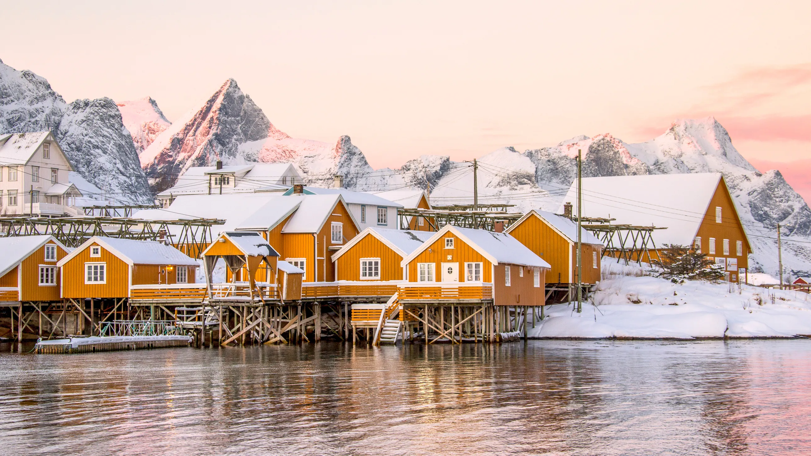
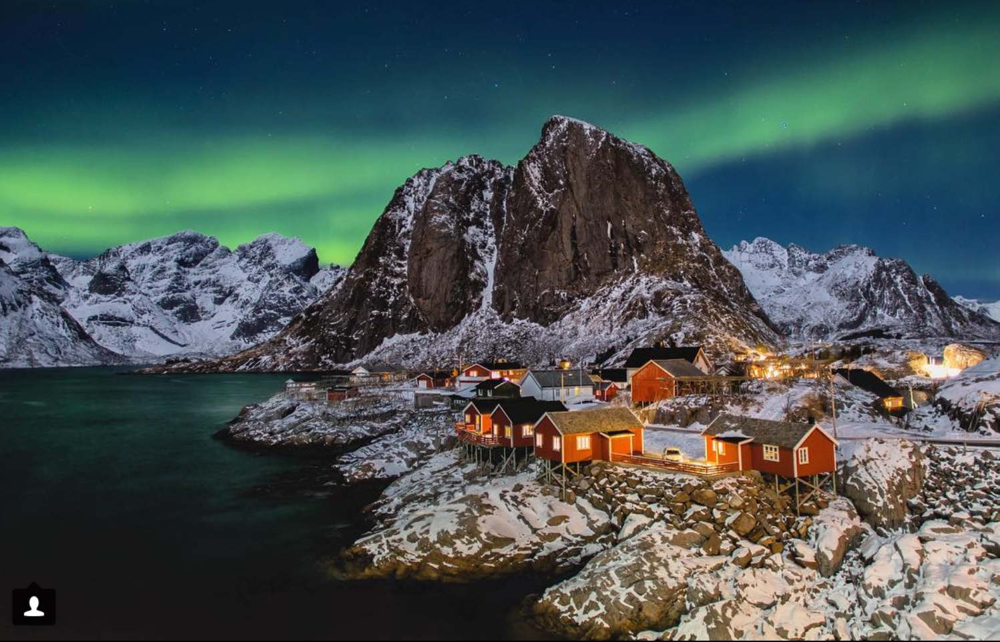
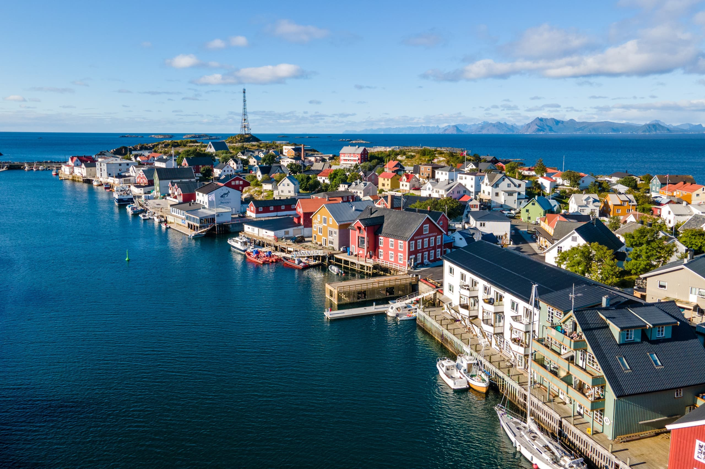

>The Lofoten Islands, an archipelago in northern Norway, are renowned for their dramatic scenery, featuring rugged mountains, deep fjords, and picturesque fishing villages. Located above the Arctic Circle, the islands experience a unique climate with mild winters and cool summers due to the Gulf Stream. Lofoten is famous for its natural beauty, offering opportunities for outdoor activities such as hiking, fishing, kayaking, and surfing. It is also an excellent place to witness the Northern Lights in winter and the Midnight Sun in summer. Traditional red and white fishermen's cabins, known as rorbuer, add to the charm of the islands, making Lofoten a popular destination for travelers seeking both adventure and tranquility. | |
Gallery |
|
 |
 |
|  |  |